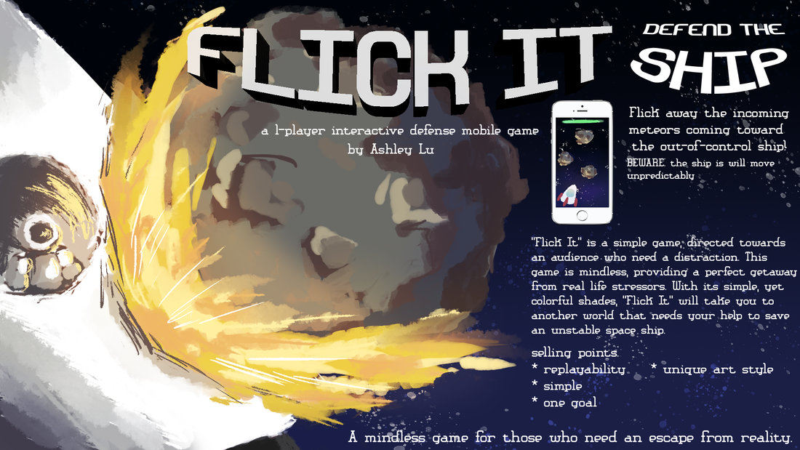

Flick It
The ship is out of control! Protect the ship by flicking away incoming meteors while the crew stabilizes it. It's a simple task, but can get difficult. Don't let your guard down! A short mobile game where instead of controlling a main unit to avoid obstacles, the player removes the obstacles. It could be considered a different take on the classic Asteroids game.
Music: Eric Skiff - Underclocked, Come and Find Me, We're the Resistors - Resistor Anthems - Available at http://EricSkiff.com/music
I created this game in Construct 3 and this was one of my earlier projects that first familiarized me with game making software. I created this game during a summer class and overall really happy with how it turned out!